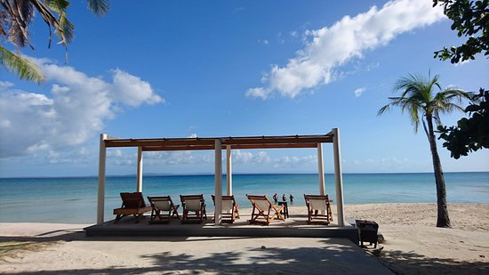
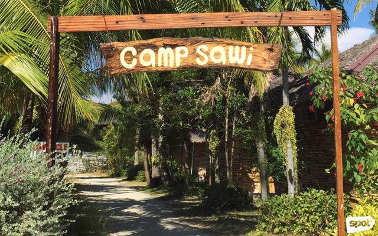
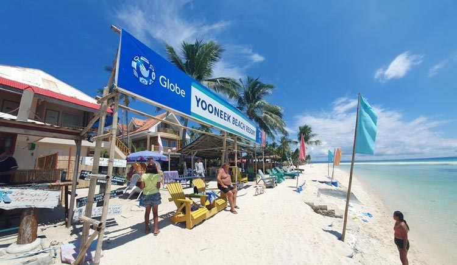
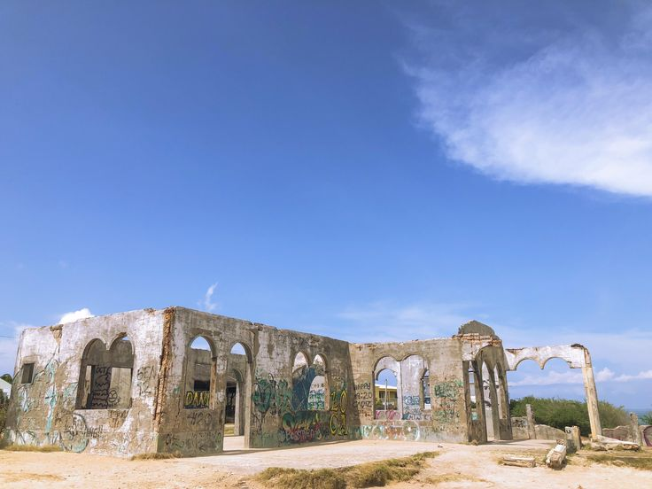

Destinations
Kota Beach
As I stepped onto the shores of Kota Beach, I was immediately captivated by its pristine beauty. The powdery white sands greeted my feet with a soft embrace, while the crystal-clear turquoise waters beckoned me to dive in. Located in the charming municipality of Santa Fe, Kota Beach felt like my own private oasis, away from the hustle and bustle of everyday life.
Kota Beach offered more than just relaxation; it was a playground for adventure seekers like myself. I couldn't resist the temptation to explore the underwater world, so I grabbed my snorkel and mask and plunged into the inviting waters. The vibrant coral reefs teeming with marine life mesmerized me, reminding me of the beauty and diversity of our oceans.
For those craving a bit more excitement, Kota Beach provided ample opportunities for water sports. I paddled along the coastline in a kayak, feeling the exhilaration of gliding over the waves and taking in the panoramic views of the coastline.
Camp Sawi
As I arrived at Camp Sawi, named after the Filipino term for "heartbroken," I was drawn to its picturesque setting and soothing atmosphere. Perched on Bantayan Island, this hidden gem is renowned for its stunning sunset views and romantic ambiance—a sanctuary for the soul.
The area's fame soared after it starred in a local romantic comedy film, but for me, its allure went beyond cinematic appeal. Standing on the elevated viewing deck, I was greeted by panoramic vistas of the ocean and neighboring islands, each frame a testament to nature's grandeur.
Camp Sawi isn't just for lovers; it's a haven for the broken-hearted and the wanderers seeking solace amidst breathtaking beauty. As I wandered through its tranquil paths and listened to the gentle rustle of the trees, I found comfort in the embrace of nature, a reminder that healing begins where the heart finds peace.
Virgin Island
Stepping onto the shores of Virgin Island, also known as Silion Island, felt like stepping into a postcard-perfect paradise. Situated off the coast of Bantayan Island, this pristine islet beckoned me with its promise of tranquility and natural beauty.
Accessible via boat from Santa Fe Port, the journey to Virgin Island was just the beginning of an unforgettable adventure. As I approached the island, I was greeted by the sight of powdery white sands, gently caressed by the crystal-clear waters of the sea.
Spending the day on Virgin Island was a dream come true. I immersed myself in its beauty, swimming in the inviting waters, lounging on the soft sands, and soaking up the warm sunshine. With each breath of salty sea air, I felt a sense of peace wash over me, leaving behind the stresses of everyday life.
The Ruins
As I wandered through the historic site known as The Ruins, located in the town of Madridejos on Bantayan Island, I couldn't help but feel transported back in time. This centuries-old structure, once a formidable watchtower and fortification during the Spanish colonial era, stood as a silent sentinel against pirate attacks that once threatened the island's shores.
Today, The Ruins serves as more than just a relic of the past; it's a living testament to Bantayan Island's rich history and cultural heritage. As I explored the remnants of the stone structure, I marveled at its architectural features, imagining the stories of courage and resilience that it held within its weathered walls.
As I stood atop the ancient walls, gazing out at the shimmering sea, I couldn't help but feel a profound sense of awe and reverence for this remarkable piece of history.